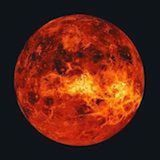

| Planet Picture |
Planet Name |
Mass(kg) |
Diameter(km) |
Mean Density(kg/m^3) |
Escape Velocity(m/s) |
Average Distance from sun |
Rotation period |
Revolution period |
|  |
Venus |
4.87 x 1024 |
12104 |
5250 |
10400 |
0.723 AU (108,208,930 km) |
243.02 (retrograde) |
224.7 |
 |
Saturn |
5.69 x 1026 |
120660 |
690 |
35600 |
9.537 AU (1,426,725,400 km) |
0.44 (10.2 Earth hours) |
29.46 |
 |
Jupiter |
1.90 x 1027 |
142,800 |
1314 |
59500 |
5.203 AU (778,412,020 km) |
0.41 (9.8 Earth hours) |
11.86 |
 |
Earth |
5.98 x 1024 |
12756 |
5520 |
11200 |
1 AU (149,597,890 km) |
1 (23.93 hours) |
365.26 |